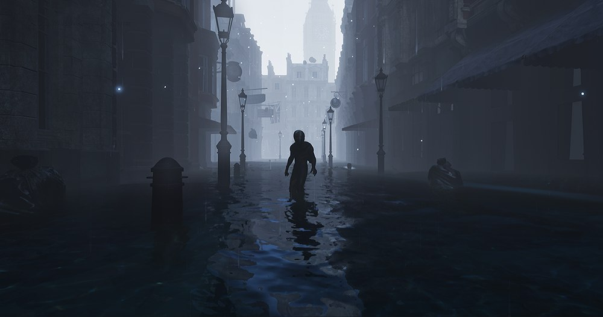
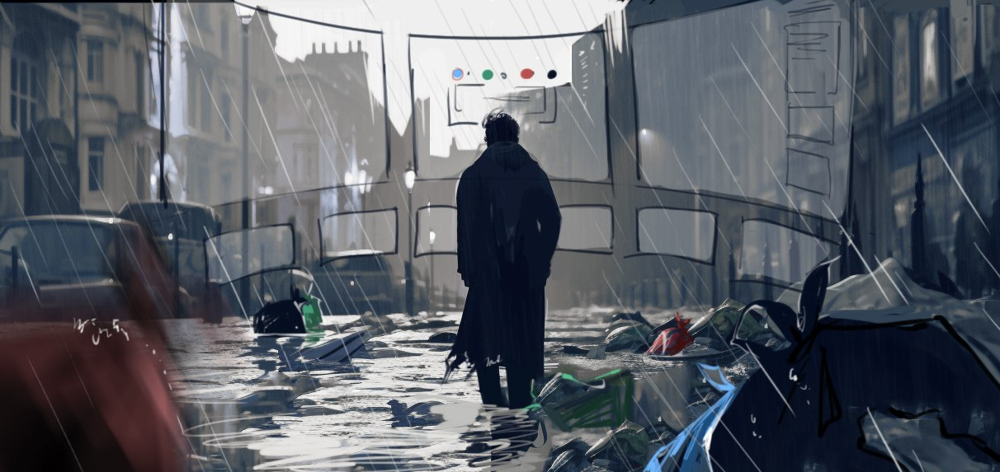
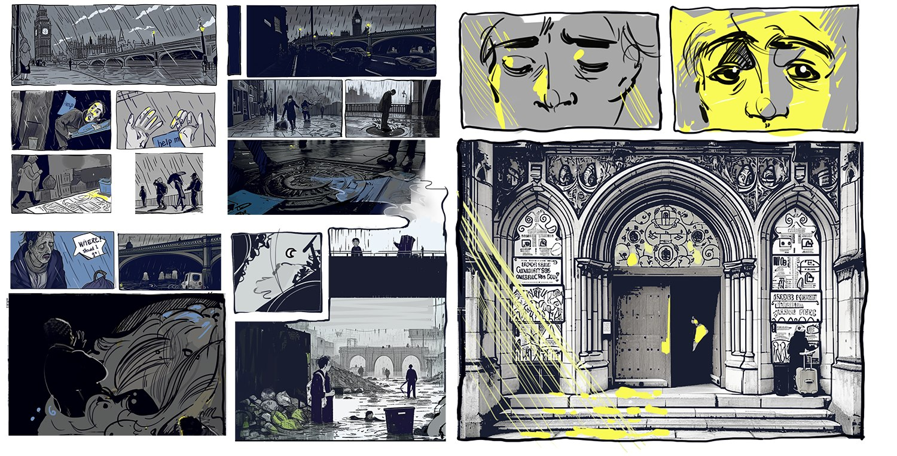
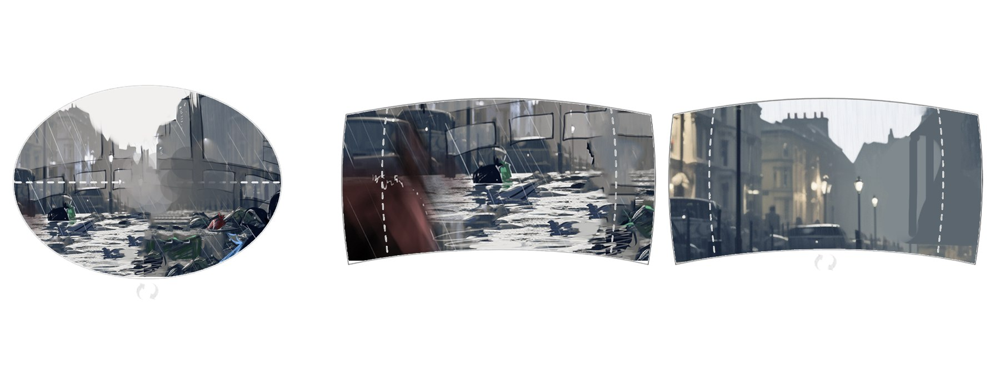
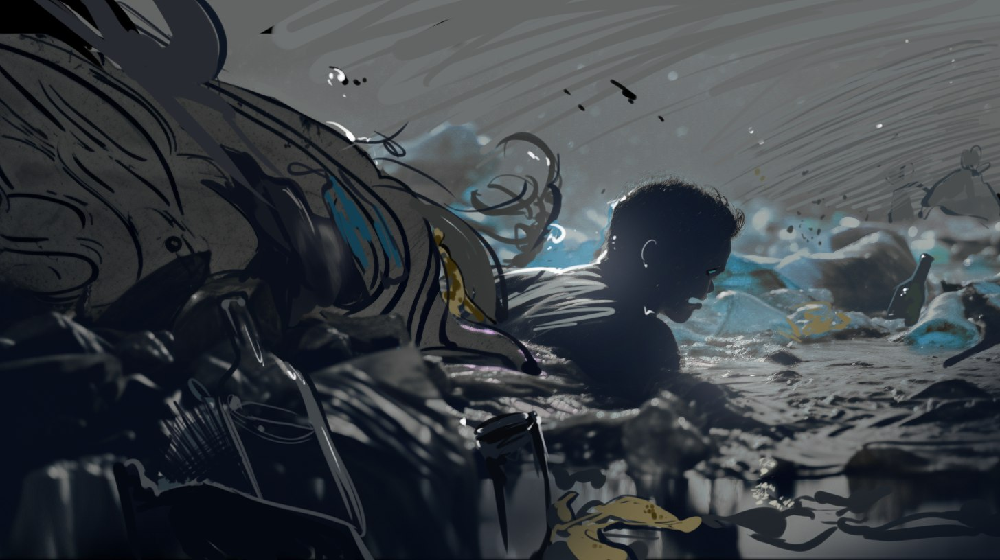
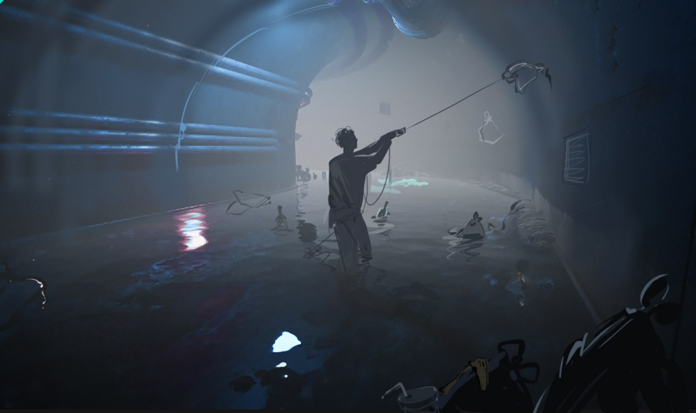

A VR shooting game built in Unity. Fifty years from now, a flood carries London's waste back into the city, and you have to decide what to do with it.
Entropy is a game-development project from my time at the Royal College of Art: a VR shooting game, built in Unity, played in a headset.
It is set fifty years in the future in West Westminster, the part of London with the lowest recycling rate and the most serious environmental problems, which is also a centre of the city's homeless population and sits at high risk of flooding. The premise is that fifty years from now the flood carries the rubbish back. Everything the city threw away returns to the street it was thrown away on, and the player has to deal with it.

The teaching problem came first. Recycling instructions are text, and nobody reads text in a headset. So we put the lesson into the two things the player's hands are already doing.
The mechanics are built around shooting and picking, with waste types tied to the colours of real recycling streams. Sorting stops being a rule you are told and becomes the thing you are physically doing: aim at what can't be recovered, reach for what can. The game never explains the colour system, it just makes you use it.

This is where the project stopped resembling anything else I had drawn. A flat storyboard assumes a frame: you decide what the audience sees and crop away the rest. In a headset there is no frame, because the player owns the camera. You cannot compose a shot. You can only compose a place, and then earn attention inside it.
So the boards got drawn twice. First the conventional way, to settle the story beats. Then again on a curved canvas matching what a head actually sweeps through, with front and rear views laid out together and a top-down view added, so we could design what sat behind the player at each moment as deliberately as what sat in front of them.


We analysed each scene as a full 360-degree space rather than as a view, then modelled and edited the in-game geometry against the concept design and the storyboards.
The primary space: a flooded high street where waste drifts past at eye level, close enough to reach for and far enough to shoot at.

A darker, tighter space underneath it. Less room to aim, more to reach for, and the claustrophobia does the work a difficulty setting normally would.

Captured in engine.
The game can end either way, and that is the argument. Sort well enough and the water goes down far enough to live in. Sort badly and it doesn't. Nobody has to say the word "consequence" out loud.
The full film of the game, cut from the playtest footage.